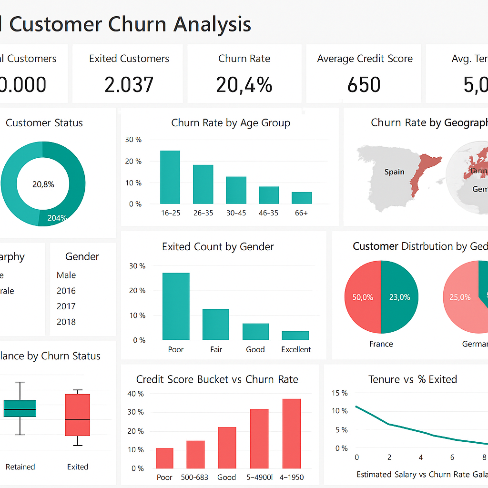

Hi, I'm Kadambala Venu
Senior Analyst – BI & Visualization at LatentView Analytics
3.6+ years delivering high-impact business intelligence, predictive dashboards, and reporting automation across enterprise environments. Transforming raw transactional data into actionable growth narratives using SQL, Power BI, Tableau, Snowflake, and Alteryx.
Background & Philosophy
Turning Complex Data into Strategic Impact
Professional Summary
I am a Senior Data Analyst with over 3.6 years of hands-on experience designing and delivering enterprise-grade business intelligence, analytics, and reporting solutions. My background spans high-growth analytics consulting at LatentView Analytics, institutional financial reporting at Empower Global Business Services, and enterprise client systems at Accenture.
I specialize in partnering directly with cross-functional business stakeholders to define critical KPIs, model structured datasets across Snowflake and SQL Server, and craft intuitive visualization solutions in Tableau and Power BI that turn complicated transactional streams into clear strategic decisions.
In addition to dashboard delivery, I am deeply committed to analytical excellence: automating repetitive reporting pipelines via Alteryx and Python, mentoring junior analytics engineers, and building reusable Center of Excellence (CoE) frameworks.
Career Snapshot
Technical Proficiency
Skills & Analytical Toolset
Comprehensive toolkit covering every layer of the enterprise data lifecycle
Languages & Logic
Core query writing, statistical programming, and dynamic calculations.
BI & Visualization
Interactive dashboards, KPI scorecards, and UX design for reporting.
Cloud & Warehouses
Scalable data stores, dimensional schemas, and query optimization.
Analytics Methods
Translating strategy into data structures, metrics, and automation.
Track Record
Work Experience
3.6+ years driving impactful BI architectures and analytics solutions
Senior Analyst – BI & Visualization
LatentView Analytics · Bengaluru, India
- Customer Analytics Leadership: Spearheaded customer analytics initiatives by mining large-scale transactional and behavioral datasets across 5+ client accounts, identifying high-impact patterns and segment trends that directly shaped business strategy.
- Advanced BI Engineering: Engineered 15+ advanced Tableau dashboards and Power BI solutions focused on customer lifecycle tracking (acquisition funnels, retention curves, churn indicators, and revenue attribution across 4+ business verticals).
- Reporting Cycle Optimization: Developed predictive trend models and cohort analyses, reducing client reporting cycle time by 35% and directly influencing go-to-market resource allocation.
- Snowflake Data Modeling: Designed and implemented robust dimensional schemas on Snowflake, optimizing query performance by 40% for high-volume analytical workloads.
- Mentorship & Standards: Mentored 4 junior analysts on DAX optimization and analytical frameworks, boosting team delivery speed by 25% and establishing reusable Centre of Excellence (CoE) reporting templates.
Business Intelligence Analyst
Empower Global Business Services · Bengaluru, India
- Automated BI Solutions: Built and maintained 20+ automated business reporting solutions using SQL, Power BI, and Alteryx, enabling 50+ enterprise stakeholders to track KPIs in real-time.
- Workflow Automation: Designed 10+ end-to-end data workflows in Alteryx for extraction, cleansing, and validation, cutting manual effort by 60% and accelerating turnaround time by 3 days.
- Complex SQL Optimization: Formulated and tuned complex SQL queries (multi-table joins, aggregations, recursive CTEs) across SQL Server and Amazon Redshift.
- Data Quality & Reconciliation: Conducted strict reconciliation audits across 8+ data sources, reducing reporting discrepancies by 45% and delivering audit-ready data.
Data Analyst
Accenture · Bengaluru, India
- Enterprise Reporting: Delivered 30+ client-facing analytical and operational reporting solutions using SQL, PL/SQL, Snowflake, and Toad across 6+ large-scale projects.
- KPI Architecture: Built and maintained 25+ Power BI dashboards and Excel reports with robust DAX measures, tracking KPIs for 100+ business stakeholders.
- Python Data Prep: Harnessed Python scripts for rapid data preparation, validation checks, and ad-hoc exploratory analysis.
- Production Release Coordination: Coordinated 10+ deployment events by drafting production scripts and validating environment readiness, hitting a 98% post-deployment success rate with 0 critical rollbacks.
- Star Performer Award: Honored with the Accenture Star Performer Award for exceptional contributions and delivering reliable integration solutions.
Portfolio Showcase
Featured Analytics Projects
Interactive dashboards and automated pipeline architectures

Bank Customer Churn Analysis
Engineered an end-to-end Power BI dashboard analyzing customer attrition across demographic slices, credit score distributions, and account balances. Created dynamic DAX KPIs tracking total churn rate (20.4%), exited count, tenure drop-offs, and geographic concentrations across Spain, France, and Germany.
Enterprise Reporting & ETL Automation Engine
Architected an automated multi-source reconciliation pipeline connecting disparate transactional databases (SQL Server, Redshift, MySQL) with Alteryx and Python. Implemented automated validation scripts and exception flags that reduced manual reporting labor by 60%.
Academic & Professional Credentials
Education & Certifications
MBA – Information Technology Management
Jain University · Bengaluru, India
Focus on strategic IT governance, enterprise technology decision-making, digital product scaling, and enterprise analytics architectures.
Bachelor of Engineering in Computer Science
Bharath University · Chennai, India
Comprehensive grounding in data structures, algorithms, relational database design (RDBMS), object-oriented programming, and operating systems.
Certifications & Honors
Databricks Certified
Data Analyst Associate
Tableau Desktop Certified
Associate Consultant
Microsoft Fabric
Analytics & Lakehouse Essentials
Microsoft Certified
Power BI Data Analyst Associate
Microsoft Azure (AZ-900)
Azure Cloud Fundamentals
Star Performer Award
Accenture · Excellence in Solutions Delivery
Get In Touch
Let's Connect & Collaborate
Available for Senior Data Analyst opportunities, BI consultations, and strategic data initiatives.
Bangalore, Karnataka, India
Open to Remote, Hybrid, and Onsite roles